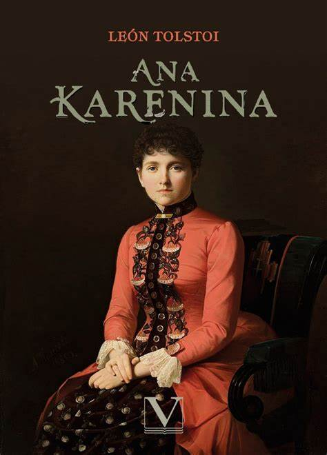

Literatura:
Para mas informacion vea Literatura rusa.
La literatura rusa es una de las más ricas y profundas del mundo, conocida por su exploración de la condición humana, su intensidad emocional y su capacidad para abordar cuestiones filosóficas y sociales. Desde los primeros textos religiosos hasta las novelas épicas de los siglos XIX y XX, la literatura rusa ha dejado una huella indeleble en la cultura global.
Los primeros textos literarios rusos están profundamente influenciados por la adopción del cristianismo ortodoxo en la Rus de Kiev en el siglo X. Las crónicas medievales, como la Crónica de Néstor, son algunos de los documentos más antiguos, proporcionando no solo relatos históricos sino también una rica descripción de la vida y la sociedad en esa época. Las vidas de los santos y otros textos religiosos también jugaron un papel crucial en la formación de la literatura temprana.
|
El siglo XIX es considerado la Edad de Oro de la literatura rusa, marcado por la aparición de grandes novelistas y poetas cuyas obras se han convertido en clásicos universales. Aleksandr Pushkin, a menudo llamado el padre de la literatura rusa moderna, introdujo una nueva libertad en la métrica poética y una prosa vibrante que resonó profundamente con el espíritu ruso. Su novela en verso "Eugene Onegin" y sus cuentos cortos sentaron las bases para futuros escritores. Fiódor Dostoyevski y Lev Tolstói son dos de los escritores más influyentes de esta época. Dostoyevski, con sus novelas como "Crimen y castigo", "Los hermanos Karamázov" y "El idiota", exploró las profundidades del alma humana, el sufrimiento y las cuestiones morales y espirituales. Sus personajes, a menudo atormentados y filosóficos, han dejado una marca duradera en la literatura mundial. Tolstói, con "Guerra y paz" y "Anna Karénina", ofreció un retrato detallado de la sociedad rusa y sus transformaciones. Sus obras abordan temas de guerra, paz, amor, familia y moralidad con una profundidad y amplitud épica. |
 |
Antón Chéjov es otro gigante de la literatura rusa de esta época, conocido principalmente por sus cuentos y obras de teatro. Sus relatos cortos, como "La dama del perrito" y "El pabellón número 6", son estudios precisos de la condición humana y la vida cotidiana, mientras que sus obras de teatro, como "El jardín de los cerezos" y "Tío Vania", han influido profundamente en el teatro moderno con su realismo psicológico y su enfoque en la vida interior de los personajes.
El siglo XX vio la literatura rusa atravesar períodos de gran experimentación y también de severas restricciones bajo el régimen soviético. Los primeros años del siglo fueron testigos de la vanguardia rusa, con poetas y escritores como Vladimir Mayakovsky y Anna Ajmátova, quienes exploraron nuevas formas y temas. La Revolución de 1917 y la posterior era soviética trajeron cambios drásticos, con la literatura siendo utilizada como una herramienta de propaganda pero también como un medio de resistencia y crítica.
Durante el régimen estalinista, muchos escritores enfrentaron censura, persecución y exilio. Mijaíl Bulgákov, con su novela "El maestro y Margarita", ofreció una crítica mordaz del régimen estalinista a través de una narrativa fantástica y alegórica. Boris Pasternak, ganador del Premio Nobel de Literatura, es conocido por "Doctor Zhivago", una novela que explora las tragedias personales en el contexto de la Revolución Rusa y la Guerra Civil.
La literatura disidente de la era soviética también incluye las obras de Aleksandr Solzhenitsyn, cuya novela "Un día en la vida de Iván Denísovich" expuso las brutalidades del sistema de gulags soviético y le valió el Premio Nobel de Literatura en 1970. Sus escritos contribuyeron significativamente a la caída del régimen soviético al exponer las realidades del totalitarismo.

|
En la Rusia post-soviética, la literatura ha continuado evolucionando, reflejando las nuevas realidades sociales, políticas y económicas del país. Escritores contemporáneos como Viktor Pelevin y Ludmila Ulítskaya han ganado reconocimiento tanto en Rusia como en el extranjero por sus exploraciones de la identidad, la historia y la sociedad rusa en la era moderna. En resumen, la literatura rusa es un tesoro de la cultura mundial, que abarca desde las epopeyas medievales hasta las novelas contemporáneas, pasando por la prosa realista y la poesía lírica. A través de sus variadas etapas, la literatura rusa ha ofrecido una ventana única a la psique rusa, explorando con valentía y profundidad las grandes cuestiones de la existencia humana. |